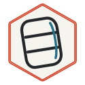

Training Log
Slip Right Step-Through Uppercut Exit
Pad Work
A counter drill for slipping the cross, stepping through, firing the uppercut, and exiting off-line.
Steps
- Partner feeds jab-cross at controlled speed.
- Slip right and step through outside the centerline.
- Rotate back through the floor and fire the uppercut.
- Exit off-line instead of staying in the pocket.